Directing AI. Not just prompting it.
Self-initiated campaigns built entirely with generative AI — Midjourney, Sora, and Grok Imagine — art directed from brief to final frame. The work spans invented brand identities, product photography, and campaign motion.
Conserva
Brutalist food photography for a brand that takes product seriously.
An invented lifestyle brand built around a visual language of brutalist architecture and restrained product photography. The brief to myself: make food feel monumental. No soft light, no warmth, no nostalgia — concrete, shadow, and material honesty.
Each image was directed from a creative brief, not generated speculatively. Composition, palette, and surface treatment were locked before prompting. Iterations refined the direction; they didn't discover it.
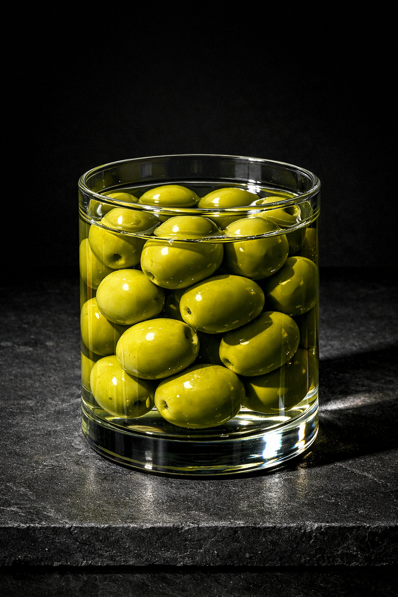
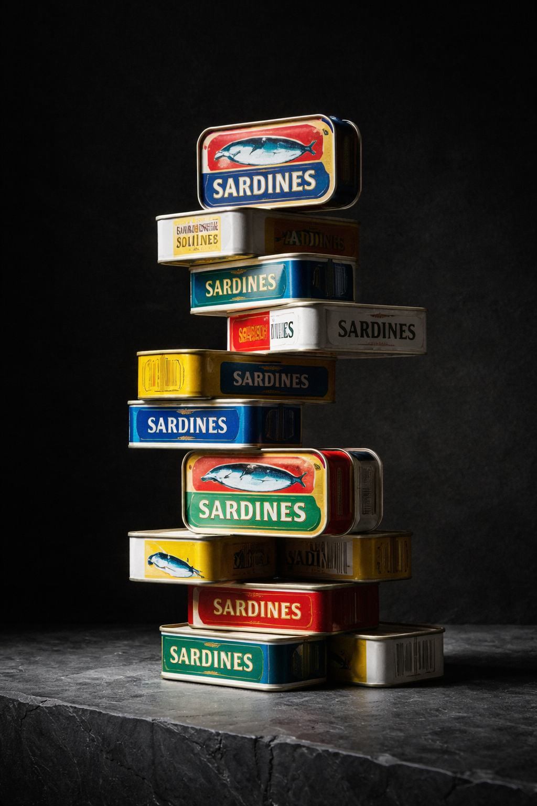
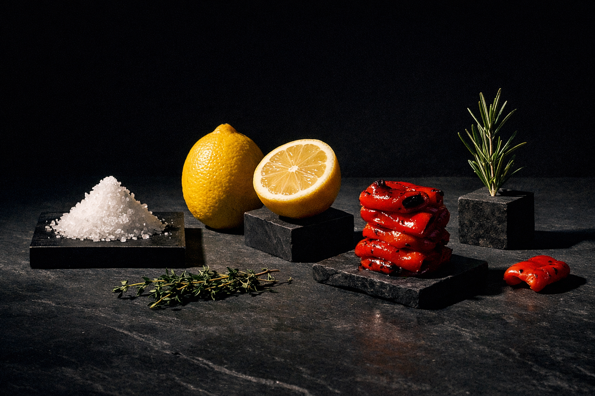
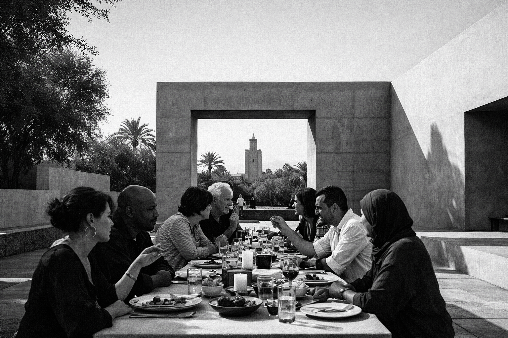
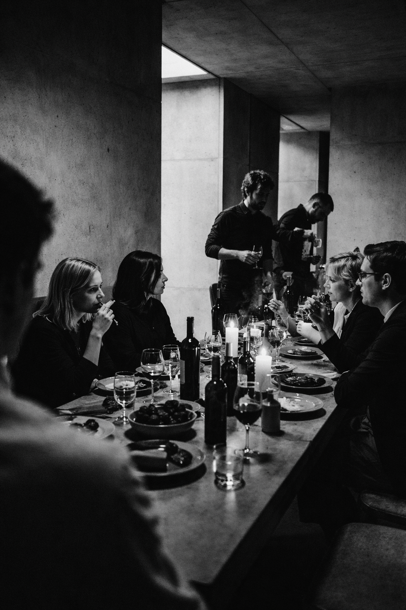
Three adjectives: bold, expressive, architectural. The assignment was a UI project. The actual question was whether a food platform could have an opinion and hold it. Not just on the discovery screen — all the way through. Most lifestyle food brands go expressive at the top and transactional three taps in. That inconsistency is a trust problem: a user who stops believing in the curation stops using the platform. Conserva was built to test whether restraint and expressiveness could be the same design move.
Patch Campaign, Vesper
Portrait-forward skincare campaign that doesn't flinch.
Skincare brands tend to erase the problem before solving it. This campaign keeps the skin visible. The invented brand is built around the idea that wearing the patch is the confident act — not hiding it.
Portraits were directed for expression first, then product placement. Motion assets used Sora for short campaign loops — 3–6 second clips intended for social placements.
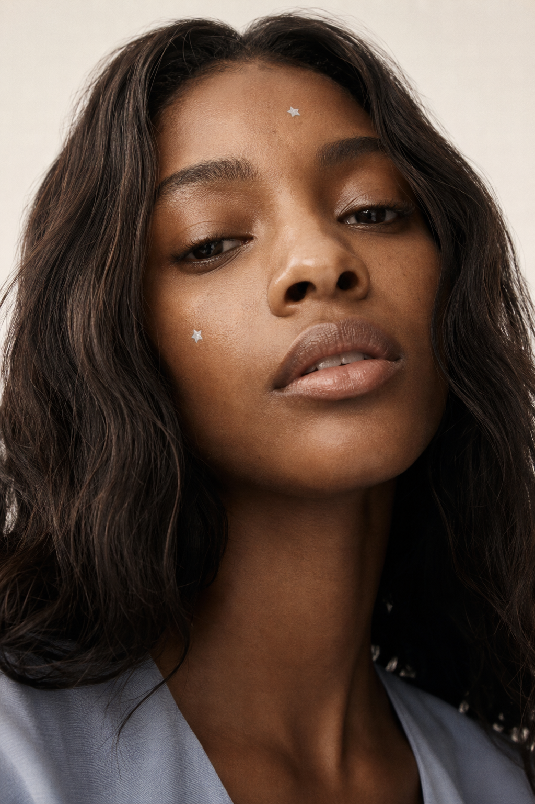
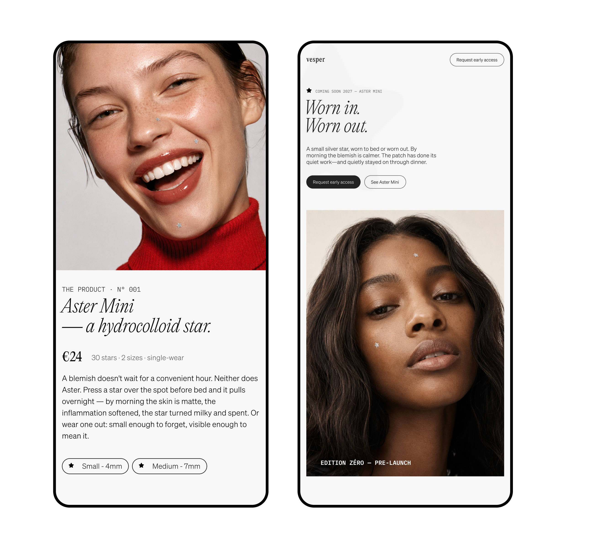
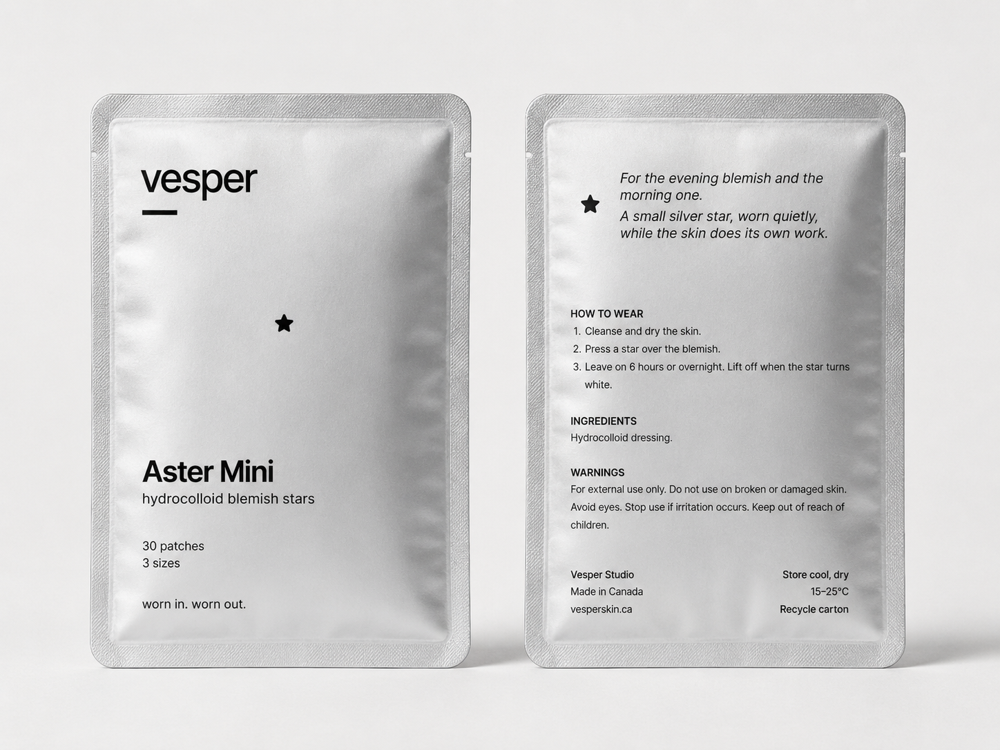
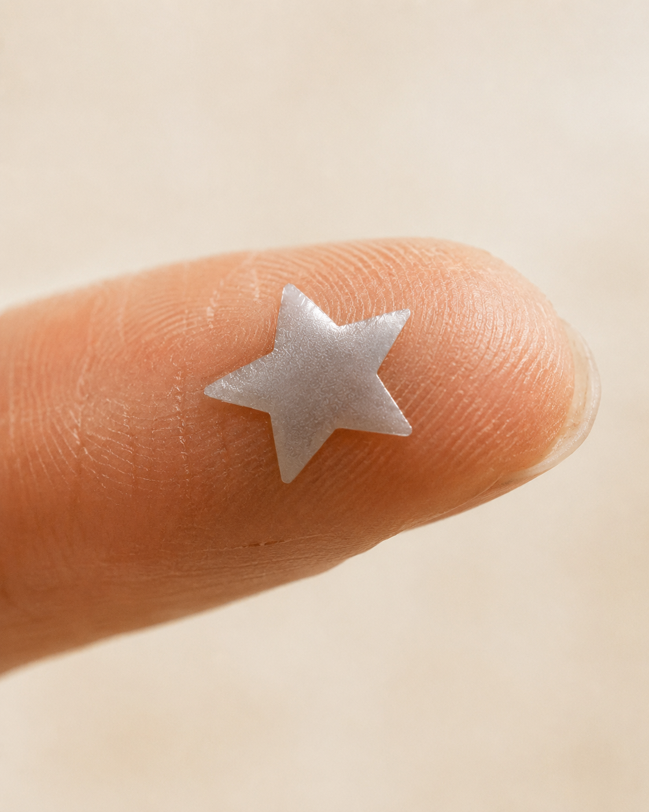
The brief was this: a pimple patch worn as part of a look, not hidden under one. The audience is women in their 30s and up — not teenagers, not the self-help crowd — women who have decided that skin texture is not a problem to be solved before leaving the house. Vesper had to feel like a brand that understood this without announcing it. The visual language had to hold across two contexts: staying in on a Thursday and going out on a Saturday. The star patch is the same object in both. The campaign had to prove that.
Thomas
Porcelain treated as architecture, not decoration.
An invented campaign for Thomas porcelain built on a single argument: objects placed with intention are already architecture. No white-box catalogue isolation — every piece sits on a surface it actually lives on, lit bright and composed like a floor plan.
The visual language refused styled excess. Disciplined colour, soft daylight, and a single object placed with the same intention a designer brings to a room. The campaign had to make the argument visually, without explaining it.
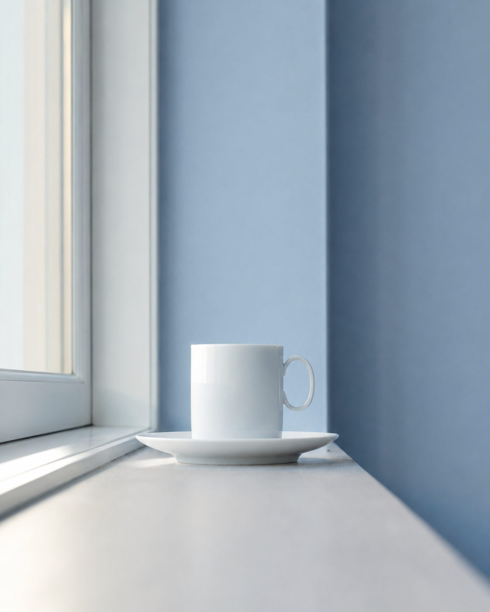
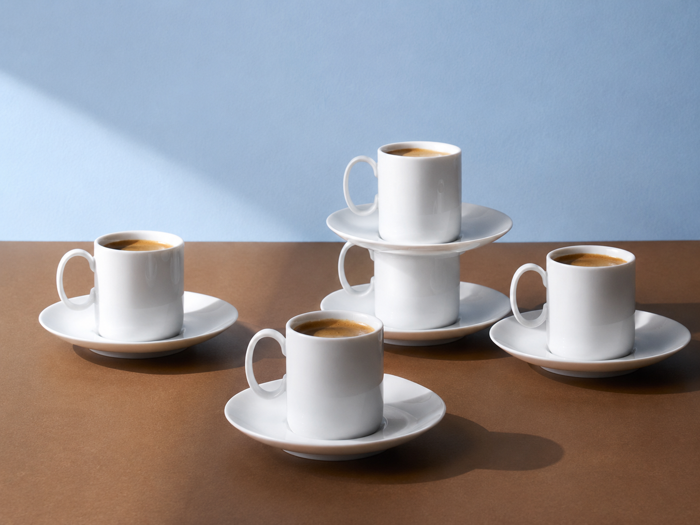
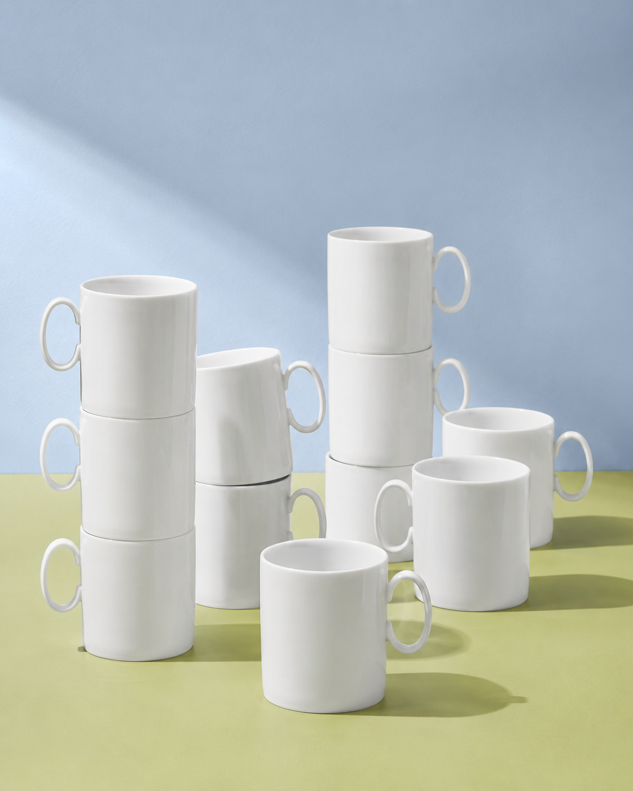
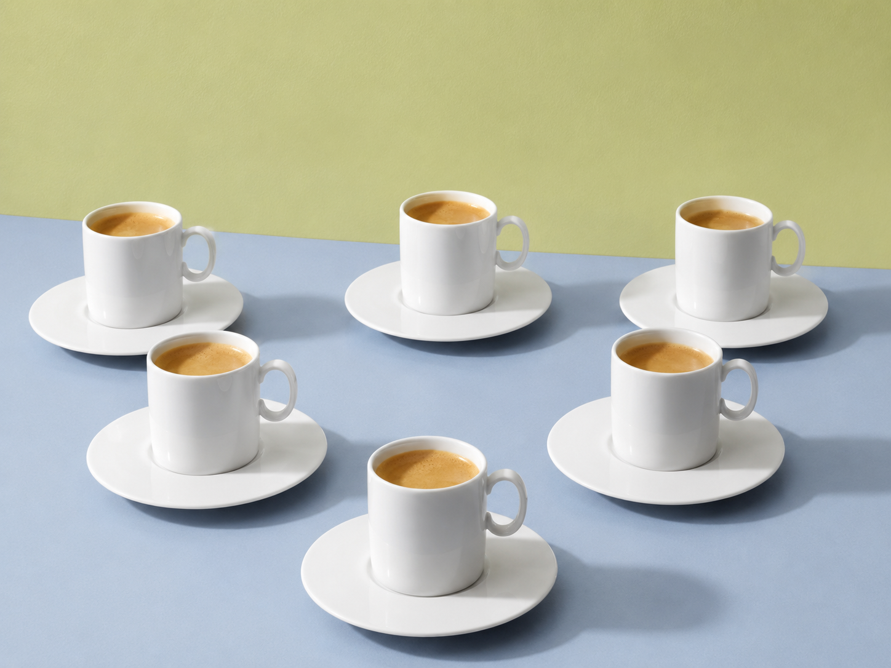
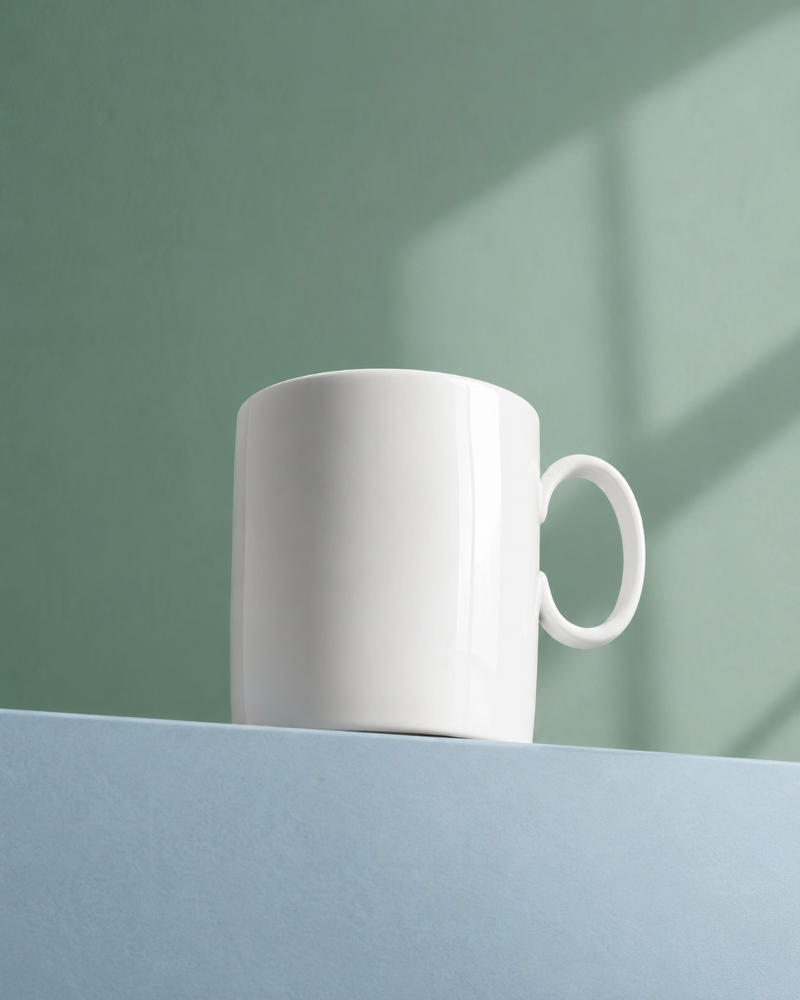
The brief was this: Thomas porcelain is not decorative. It is structural. The problem with most tableware campaigns is that objects float — isolated against white, lit for the catalogue, removed from every surface they actually live on. Thomas had strong product and a design language worth taking seriously. The challenge was to show that a cup on a windowsill, a bowl on a shelf, a plate stacked on a counter is already a composition — already architecture. The campaign had to make that argument visually without explaining it. No styled excess, no editorial clutter. Just objects placed with the same intention a designer brings to a room. Bright light. Disciplined colour. The table treated as a floor plan.
Brief before tool.
Every project starts with a written creative brief: mood, palette, reference era, what the image should refuse to do. The brief constrains the generation — it doesn't follow it.
Visual language locked first.
Palette, surface treatment, and composition logic are locked before any prompting. This prevents the tool from deciding the aesthetic direction.
Iteration as refinement, not discovery.
Each iteration narrows toward the brief. If an output surprises me productively, I write down why and update the brief — I don't chase the accident.
Stills before motion.
For projects with both mediums, visual language is finalized in stills before any video generation. Motion inherits the direction — it doesn't establish it.